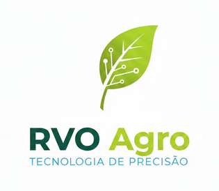

RVO
TECH

Dashboard Central
Pré-Plantio
Ciclo
Estimativa
Nutrição
Manejo (MIP)
Pluviômetro
Máquinas
Assistente IA
Relatórios
Telemetria e Conferência de Colheita
Monitoramento de maquinário e cálculo de perdas (Smart Farming).
Data da Operação
ID Máquina / Modelo
Checklist Operacional (Colheita)
Velocidade de Avanço (Alvo 5 a 6,5 km/h)
Umidade do Grão
Selecione...
Seco (Duro/Quebradiço)
Úmido (Emborrachado)
Altura de Corte Ajustada?
Sim, ajustada
Não
Molinete Regulado?
Sim, regulado
Não
Calculadora de Perdas (1m²)
Grãos - Perda Natural (Média)
Grãos - Perda Total (Média Máquina)
Resultado da Conversão
(Média Máquina - Natural) x 1,5
0
kg/ha
Aguardando dados
Transmitir Dados de Telemetria